If you don't want to print now,
Bivariate data: population or sample?
In most bivariate data sets, we have no interest in the specific individuals from which the data are collected. The individuals are 'representative' of a larger population or process, and our main interest is in this underlying population.
Example
Data were collected by biologists from 15 lakes in central Ontario to assess how zinc concentrations in an aquatic plant were related to zinc concentrations in the lake sediment.
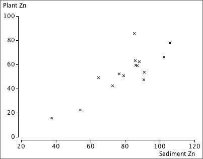
The biologists want to generalise from these specific lakes (and sediment samples) to describe the relationship between zinc concentrations in sediments and plants in a way that might be used to predict plant zinc from sediment samples in other similar lakes.
Response distribution at each X
In an experiment, several response measurements are often made at each distinct value of X. The diagram below shows one such data set using a histogram for the distribution of Y at each x-value.
Model for data
The response measurements at any x-value can be modelled as a random sample from a normal distribution. The collection of distributions of Y at different values of X is called a regression model.

Normal linear model for the response
The most commonly used regression model is a normal linear model. It involves:
The last two properties of the normal linear model can be expressed as
σy = σ
μy = β0 + β1x
The diagram below illustrates these three properties of the normal linear model: the distributions at different x-values have normal distributions with the same spread and the mean increases linearly with x.

Note: only the response is modelled
A normal linear model does not try to explain the distribution of x-values. In experimental data, they are fixed by the experimenter. In observational data, the x-values are usually random, but the regression model only explains how the y-values are related to them and treats them as constants.
The regression model only describes the conditional distribution of Y at each X.
Alternative descriptions of the model
The normal linear model describes the distribution of Y for any value of X:
Y ~ normal (μy , σy)
where
μy = β0 + β1x
σy = σ
An equivalent way to write the same model is...
y = β0 + β1x + ε
where ε is called the model error and has a distribution
ε ~ normal (0 , σ)
The error, ε , for a data point is the vertical distance between the cross on a scatterplot and the regression line.

Band containing about 95% of values
Applying the 70-95-100 rule of thumb to the errors, about 95% of them will be within 2 standard deviations of zero — i.e. between ±2σ.
Since the errors are vertical distances of data points to the regression line, a band 2σ on each side of it should contain about 95% of the crosses on a scatterplot of the data.

Slope and intercept
A normal linear model,
μy = β0 + β1x
σy = σ
involves 3 parameters, β0, β1 and σ. The model's slope, β1, and intercept, β0, can be interpreted in a similar way to the slope and intercept of a least squares line.
Examples of interpretation
| Context | Interpretation of β1 | Interpretation of β0 |
|---|---|---|
| Y = Yield of wheat per acre X = Fertiliser (kg per m2) |
Increase in mean yield per acre for each additional kg/m2 of fertiliser | Mean yield per acre if no fertiliser is used |
| Y = Exam mark X = Hours of study by student before exam |
Increase in expected mark for each additional hour of study | Expected mark if there is no study |
| Y = Hospital stay (days) X = Age of patient |
Average extra days in hospital per extra year of age | Average days in hospital at age 0. Not particularly meaningful here. |
Least squares
In practical situations, we must estimate β0, β1 and σ from a data set that we believe satisfies the normal linear model.
The best estimates of β0 and β1 are the slope and intercept of the least squares line, b0 and b1
Since b0 and b1 are functions of a data set that we assume to be a random sample from the normal linear model, b0 and b1 are themselves random quantities and have distributions.
Simulated example
The diagram below represents a regression model with a grey band. A sample of 20 values has been generated from this model and the least squares line (shown in blue) has been fitted to the simulated data. The least squares line provides estimates of the slope and intercept but they are not exactly equal to the underlying model values.

A different sample would give 20 different points and a different least squares line, so the least squares slope and intercept are random.
Errors and residuals
The error, ε, for any data point is its vertical distance from the regression line.
In practice, the slope and intercept of the regression line are unknown, so the errors are also unknown values, but the least squares residuals provide estimates.

Estimating the error standard deviation
The third unknown parameter of the normal linear model, σ, is the standard deviation of the errors,
σ = st devn( ε )
σ can be estimated from the least squares residuals, {ei},

This is similar to the formula for the standard deviation of the residuals, but uses the divisor (n − 2) instead of (n − 1). It describes the size of a 'typical' residual.
Example

Distribution of the least squares slope and intercept
The least squares line varies from sample to sample — it is random.

The least squares estimates b0 and b1 of the two linear model parameters β0 and β1 therefore also vary from sample to sample and have normal distributions that are centered on β0 and β1 respectively.

Standard error of slope
When b1 is used as an estimate of β1, the estimation error has a normal distribution,
error in estimate of β1 = (b1 − β1) ~ normal ( 0, σb1 )
This standard deviation is the standard error of the estimate,

where sx is the standard deviation of X. Since σ is unknown, we must replace it with an estimate from the data to obtain a numerical value for the standard error,

Example

The estimated error distribution gives in indication of how close our least squares estimate, b1 = 9.27, is likely to be to the population regression slope, β1.
Confidence interval for the slope
When the least squares slope, b1, is used to estimate β1, the error has a normal distribution,
error in estimate of β1 = (b1 − β1) ~ normal ( 0, σb1 )
This suggests a 95% confidence interval of the form

In practice, we must replace σ in the formula for the standard error with an estimate (based on the sum of squared residuals),

so the constant 1.96 must be replaced by a larger value from the t distribution with (n - 2) degrees of freedom.
A 95% confidence interval for the slope is

Most statistical software will evaluate b1 and its standard error for you when you fit a normal linear model, so it is fairly easy to evaluate the confidence interval in practice — you will not need to use any of the formulae above!
Example
For the example on the previous page, the least squares estimate of the slope and its standard error were:
b1 = 9.27, se (b1) = 1.42
Since there were n = 9 data points, tn − 2 = t7 = 2.365, so a 95% confidence interval for the slope is

We are 95% confident that the expected number of deaths per 100,000 is between 5.9 and 12.6 higher for each unit increase in the exposure index.
Properties of 95% confidence interval
Since a confidence interval for the slope, β1, is evaluated from random sample data, it will vary from sample to sample. In 95% of such samples, the 95% confidence interval will include the true population slope, but in 5% of samples it will not.
We cannot tell whether or not our single data set is one of the 'lucky' ones.
Simulation

What affects the accuracy of the least squares slope?
The standard deviation of b1 (its standard error) is

where
The standard error of b1 is lowest when:
Implications for experimental design
To get the most accurate estimate of the slope from experimental data,
However if the spread of x-values is increased too much, the relationship may not be sufficiently linear for a linear model to be used.

Nonlinearity is a major problem, so it is important to be able to assess whether a relationship is linear. Don't just collect data at the ends of the 'acceptable' range of x-values, even though this maximises sx.

Does the response depend on X?
In a normal linear model, the response has a distribution whose mean, µy, depends linearly on the explanatory variable,
Y ~ normal (μy , σy)
If the slope parameter, β1, is zero, then the response has a normal distribution that does not depend on X.
Y ~ normal (β0 , σ)
This can be tested formally with a hypothesis test for whether β1 is zero.
Testing for zero slope
To assess whether the explanatory variable affects the response, we test the hypotheses
H0 : β1 = 0
HA : β1 ≠ 0
The test is based on how far the least squares slope, b1, is from zero. To assess this, we must take into account its standard deviation (standard error),
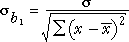
If we knew the value of σ, we could standardise b1 to get a test statistic,
standardised value, 
If β1 was really zero (H0), the probability of getting a least squares slope as far from zero as that recorded would be the p-value,

Unfortunately σ is usually unknown and the standard deviation of b1 must be estimated from the sample data. We therefore use a test statistic of the form
t ratio, 
and refer to a t distribution with n - 2 degrees of freedom to find the p-value.

The p-value is interpreted in the same way as for other hypothesis tests — a p-value close to zero means that the sample slope is far enough from zero to be inconsistent with H0: β1 = 0.
Examples


Strength of relationship vs strength of evidence for relationship
It is important to distinguish between the correlation coefficient, r, and the p-value for testing whether there is a relationship between X and Y.
It is important not to confuse these two values when interpreting the p-value for a test.
This is partly explained by an alternative formula for the test statistic,

The test statistic and the p-value therefore both depend on both r and the sample size, n. Increasing n and increasing r both result in a lower p-value.

Properties of p-value
P-values for testing whether a linear model's slope is zero have the same properties as p-values for other hypothesis tests. In particular,
When Y and X are not related (β1 = 0), it is still possible to get small p-values, suggesting that β1 is not zero. However there is only probability 0.01 of getting a p-value as low as 0.01 — it is unlikely but possible. Such a p-value is more likely if the variables are related so we interpret it as giving strong evidence of a relationship.
A normal linear model provides a response distribution for all X. With estimates for all three model parameters, we can obtain the approximate response distribution at any x-value, even if we have no data at that x-value.

What affects the accuracy of a prediction?
The predicted response at X is
 = b0 + b1 x
= b0 + b1 x
and has a normal distribution with mean
μy = β0 + β1x
Its standard deviation depends on the value x at which the prediction
is being made. The further x is from
its mean in the training data,  ,
the greater the variability in the prediction.
,
the greater the variability in the prediction.
Simulation
The effect of the x-value on the variability of the predicted response can be shown using least squares lines fitted to simulated data:
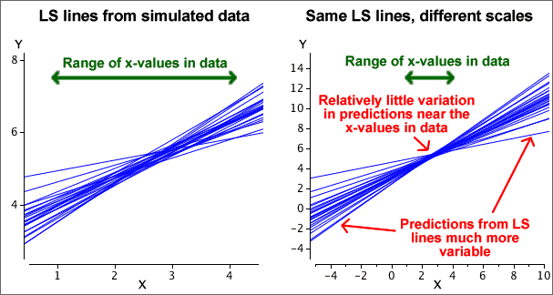
The diagram below shows two theoretical distributions from the above model. (The spread would be even greater for predicting at x = 10.)

Estimating the mean response
In some situations, we are interested in estimating the mean response at some x-value,
μy = β0 + β1x
The least squares estimate,
 = b0 + b1 x
= b0 + b1 x
becomes increasingly accurate as the sample size increases (since b0 and b1 become more accurate estimates of β0 and β1).
Predicting a single item's response
To predict the response for a single new individual with a known x-value, the same prediction would be used,
 = b0 + b1 x
= b0 + b1 x
However no matter how accurately we estimate the mean response for such individuals, a single new individual's response will have a distribution with standard deviation σ around this mean and we have no information to help us predict how far it will be from its mean. The prediction error cannot have a standard deviation that is less than σ.
The error in predicting an individual's response is usually greater than the error in estimating the mean response.
Simulation
The diagram below contrasts estimation of the mean response and prediction of a new individual's response at x = 5.5. Least squares lines have been fitted to several simulated data sets, one of which is shown on the left. The two kinds of errors from the simulations are shown on the right, showing that the prediction errors are usually greater.

The same value,
 = b0 + b1 x
= b0 + b1 x
is used both to estimate the mean response at x and to predict a new individual's response at x, but the errors are different in the two situations — they tend to be larger for predicting a new value.
95% confidence interval for mean response

A formula for the standard error on the right exists, but you should rely on statistical software to find its value.
95% prediction interval for a new individual's response
For prediction, a similar interval is used:

where k is greater than the corresponding standard error for the confidence interval. Statistical software should again be used to find its value.
Example
The diagram below shows 95% confidence intervals for the mean response at x and 95% prediction intervals for a new response at x as bands for a small data set with n = 7 values.

Extrapolation
These 95% confidence intervals and 95% prediction intervals are valid within the range of x-values about which we have collected data, but they should not be relied on for extrapolation. Both intervals assume that the normal linear model describes the process, but we have no information about linearity beyond the x-values that have been collected.
Assumptions
The normal linear model is:
y = β0 + β1x + ε
ε ~ normal (0 , σ)
The following four requirements are implicit in the model but may be violated, as illustrated by the examples.
Linearity The response may change nonlinearly with x.
|
Constant standard deviation The response may be more variable at some x than others.
|
Normal distribution for errors The errors may have skew distributions.
|
Independent errors When the observations are ordered in time, successive errors may be correlated.
|
Residual plots
The above problems may be evident in a scatterplot of the raw data, but a residual plot often highlights any problems.

Linearising the relationship between Y and X
Even if X and Y are nonlinearly related, some transformation of X may be linearly related to some transformation of Y. For example, the data may satisfy the model
y2 = β0 + β1 log x + ε
ε ~ normal (0 , σ)
The parameters of this model could again be estimated by least squares, based on the transformed values of the two variables, and confidence intervals and hypothesis tests would be valid.
Example: Transformation of X

For this data set, a linear model seems reasonable after a log transformation of X.
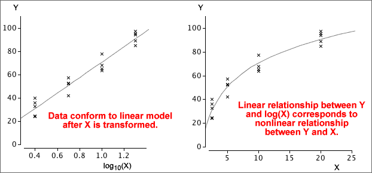
Transformation and the error standard deviation
Transforming X does not affect the spread of response values at each value of X. Transformation of X therefore does not affect whether or not the linear model's assumption of constant error standard deviation holds.
However, transforming Y not only affects linearity of the relationship, but also affects whether or not the error standard deviation is constant.
Example
The raw data shown in the scatterplot on the top left shows both curvature and non-constant variance — the y-values are much more variable when X is near 0 than when X is high.

A log transformation of Y both linearises the relationship and removes the non-constant variance.
Fortunately, the same transformation of the response that linearises the relationship often also results in fairly constant error standard deviation.
Prediction using transformed variables
To predict Y at any value x, we use the least squares line that was fitted to the transformed data.
Example
In the example below, a linear model can be used to describe the relationship between log10(y) and log10(x). The diagram shows how it can be used to predict y from x.
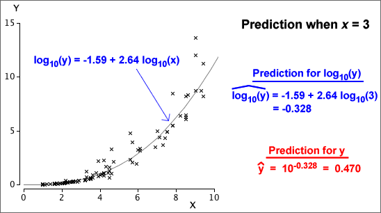
Prediction intervals can be obtained in a similar way. A prediction interval is found using the transformed variables, then its end-points are back-transformed into values of Y on its original scale.
For example, if the square root of Y is linearly related to X, we find a prediction interval for sqrt(Y), then square both ends of this interval to get a prediction interval for Y itself.
Outliers and errors
In a scatterplot, cross that is unusually far above or below the regression line is an outlier. It would correspond to a large error, ε.

Standardised residuals
The least squares residuals are estimates of the unknown errors and can be used in a similar way to give information about whether there is an outlier.


To help assess the residuals, we usually standardise them — dividing each by an estimate of its standard deviation.
| standardised residual = | e |
| se |
The standardised residuals are each approximately normal (0, 1) if the normal linear model fits, so only about 5% will be outside the range ±2, and hardly any outside the range ±3.
Standadised residual greater than 3 or less than -3 are often taken to indicate possible outliers.
Note however that in a large data set of 1,000 values, we would expect 50 values outside ±2 and 3 values outside ±3. Values a little outside ±3 can occur by chance.
Problems with residuals as indicators of outliers
All data points pull the least squares line towards themselves — the line is positioned to minimise the sum of squares of the residuals
minimise 
Large residuals pull very strongly on the line since they are squared in the least squares criterion. As a result,
Outliers will strongly pull the least squares line towards themselves, making their residuals smaller than you might otherwise expect.
Leverage
If an outlier corresponds to an x-value near its mean, it usually will have a large residual,

However if the outlier occurs at an extreme x-value, it has a stronger influence on the position of the least squares line than the other data points. Such points are called high leverage points and pull the least squares line strongly towards them. Outliers that are high leverage points may therefore result in residuals that do not stand out from the other residuals.

Normal probability plot of residuals
The normal linear model assumes that the model errors are normally distributed,
ε ~ normal (0 , σ)
A histogram of the residuals can be examined for normality but a better way is with a normal probability plot of the residuals. If the residuals are normally distributed, the crosses in the normal probability plot should lie close to a straight line.
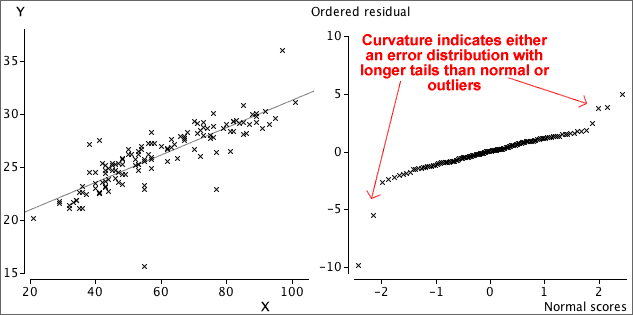
Warning
If the assumptions of linearity and constant variance are violated, or if there are outliers, the probability plot of residuals will often be curved, irrespective of the error distribution.
Only draw a probability plot if you are sure that the data are linear, have constant variance and have no outliers.
Independence of the errors
The normal linear model assumes that the errors are uncorrelated with each other, but correlated errors sometimes arise.
Correlated errors may arise in an experiment in a greenhouse where adjacent plants will be grown in similar conditions (light, moisture, air flow). An unusually high growth rate for one plant may be associated with environmental conditions that also cause unusually high growth rates in adjacent plants.
Correlated errors are most common when the observations are made sequentially in time. This is called serial correlation.
Assessing serial correlation
Strong serial correlation may be visible in a plot of residuals against time. A more formal test uses a test statistic called the Durbin-Watson statistic, d. Writing the successive residuals as e1, e2, ..., en,

If successive residuals are similar, d will be close to zero. An approximate p-value can be obtained from a computer, special statistical tables or with a simulation such as that below.

Warning
If a linear model is used for a time series, but the relationship is actually nonlinear, successive residuals also tend to be similar and the Durbin-Watson statistic will also be small.
An unusually small Durbin-Watson statistic can be caused by either serial correlation or nonlinearity.
Simple linear model
Statistical analysis by researchers often examines the relationship between a single 'response' variable, Y, and other explanatory variables.
In earlier chapters of CAST, we have used a simple linear model to describe the effect of a single numerical explanatory variable, X, on a response variable, Y,

Inference about the parameters in this model describe how Y is related to X.
Two or more explanatory variables
In many situations, more than one explanatory variable could potentially be related to the response.
In this chapter, we extend the simple linear model to explain how two explanatory variables, X and Z, affect the response.
Body fat
Percentage body fat of individuals is an important measure of their health, but is a difficult quantity to measure. Accurate measurement of a person's body fat involves weighing the individual submersed in water, so is rarely done in fitness checks.
It is however possible to estimate percentage body fat from other body measurements that are easier to obtain. In order to determine how effectively body fat could be estimated from simple body measurements, scientists accurately determined body fat from a group of 252 men. Several other easily obtained measurements were also recorded from each subject.
| Measurement | Person 1 | Person 2 | Person 3 | ... |
|---|---|---|---|---|
| Body fat (percent) | 12.6 | 6.9 | 24.6 | ... |
| Weight (lbs) | 154.25 | 173.25 | 154.00 | ... |
| Age (yrs) | 23 | 22 | 22 | ... |
| Height (inches) | 67.75 | 72.25 | 66.25 | ... |
| Neck circumference (cm) | 36.2 | 38.5 | 34.0 | ... |
| Chest circumference (cm) | 93.1 | 93.6 | 95.8 | ... |
| Abdomen circumference (cm) | 85.2 | 83.0 | 87.9 | ... |
| Hip circumference (cm) | 94.5 | 98.7 | 99.2 | ... |
| Thigh circumference (cm) | 59.0 | 58.7 | 59.6 | ... |
| Knee circumference (cm) | 37.3 | 37.3 | 38.9 | ... |
| Ankle circumference (cm) | 21.9 | 23.4 | 24.0 | ... |
| Extended biceps circumference (cm) | 32.0 | 30.5 | 28.8 | ... |
| Forearm circumference (cm) | 27.4 | 28.9 | 25.2 | ... |
| Wrist circumference (cm) | 17.1 | 18.2 | 16.6 | ... |
The diagram below shows scatterplots of body fat against the other variables.
Use the popup menu to examine the relationship between body fat and each of the variables in turn. The correlation coefficients are also shown in the diagram — they provide a useful summary of the strength of the relationship.
Which variables are most strongly related to body fat?
Click Least Squares Line to show the least squares line that might be used to predict body fat from any single explanatory variable.
Graphical display of data with three variables
The relationship between two numerical variables, Y and X, can be effectively displayed in a 2-dimensional scatterplot. For each additional variable, an extra dimension would be needed to produce a corresponding display. This is clearly impossible for three or more explanatory variables, but a 3-dimensional scatterplot can be produced for data sets with a response and two explanatory variables.
A reasonable impression of such a 3-dimensional scatterplot can be obtained on a computer screen by showing it rotating.
Notation
In this chapter, we call the response variable Y when we are describing methods in general (but we use more meaningful names like 'Body fat' when discussing particular data sets). Similarly, the two explanatory variables will be denoted by X and Z.
By convention, the response variable is drawn on the vertical axis of the scatterplot.
Body fat (observational data)
We saw on the previous page that abdomen circumference had the highest correlation with body fat of the 13 measurements that were made from each of the 252 men. The diagram below initially shows a scatterplot of these two variables.
This display is actually 3-dimensional and the 3rd dimension (which initially points towards you and therefore cannot be seen) represents the heights of the men. Position the mouse in the centre of the display and drag towards the bottom right of the screen. This rotates the display and should give you a reasonable impression of the 3-dimensional nature of this scatterplot. The buttons under the display can also be used for rotation.
Click on crosses to see how the three measurements from each man relate to the position of its cross on the three axes.
Energy expenditure of bees (experimental data)
In an experiment, an entomologist recorded energy expenditure (joules/sec) for bees drinking water with different sucrose concentrations (%) and at different temperatures. Energy expenditure is the response measurement.
Note that the data are experimental so the values of the two explanatory variables have been fixed by the entomologist. There were 3 replications of the experiment — 3 measurements were made for each combination of levels of sucrose and temperature. Again rotate the diagram to help understand how energy expenditure is related to sucrose concentration and temperature.
Adding another variable to the equation predicting Y from X
We often use a straight line to describe how a response variable is related to a single explanatory variable — its equation can be used to predict Y from X.
y = b0 + b1 x
The simplest way to describe how a second explanatory variable Z also affects the response, is to add a further term to this equation,
y = b0 + b1 x + b2 z
This equation is also called a linear model for the response.
Graphical display
On a 3-dimensional display whose axes represent Y, X and Z, the equation corresponds to a plane.
Body fat
We saw earlier that abdomen circumference and height were related to body fat in the 252 men whose body fat was measured by an underwater weighing technique. (Abdomen circumference had the highest correlation with body fat.) We will now consider how a prediction of body fat might be made using both abdomen circumference and height. Consider the equation
body fat = 30.0 + 0.53 abdomen − 0.80 height
The diagram below represents this equation.
Click anywhere between the abdomen and height axes (in the yellow area of the diagram) to see how the plane translates any pair of values (abdomen, height) into a predicted value of body fat, via the equation.
Parameters
The three parameters in an equation of the form
y = b0 + b1 x + b2 z
are interpreted in a similar way to the corresponding parameters for an equation with one explanatory variable.
Illustration
The diagram below represents a linear model. The diagonal grey line that is initially visible shows how y is related to x only.
The two red arrows that are initially visible represent the parameters b0 and b1. Adjust these parameters by dragging the arrows vertically. Observe that b0 is the y-value when x=0, and that b1 is the increase in y when x increases by 1.
Now drag the centre of the diagram a little towards the bottom right to rotate the diagram (or click the x-y-z button). A third arrow becomes visible that allows you to change the third parameter. Adjust all three parameters and observe how they affect the positioning of the plane.
Fitted values
For most data sets, a linear equation of the form
y = b0 + b1 x + b2 z
cannot exacty predict the response from the two explanatory variables — the crosses on the 3-dimensional scatterplot do not fall exactly on a plane. For the i'th individual, the prediction that is made from the equation is called the fitted value for that individual.
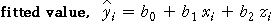
Residuals
The difference between the fitted value and the actual response is called the individual's residual.
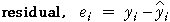
Body fat
At the start of this section, we displayed the relationship between percentage body fat and various other measurements from 252 men. To make the diagrams clearer, we will now only consider a selection of 25 of these men.
The diagram below shows a scatterplot of body fat, abdomen circumference and height, and the plane representing a linear equation that might be used to predict body fat,
Body fat = 22 + 0.53 Abdomen − 0.80 Height
We will see later how this equation can be improved.
Click on crosses to display the actual and fitted body fat percentages for our group of 25 men. The residuals are shown as red vertical lines.
The residuals are vertical distances between the crosses and the plane.
Rotate the scatterplot to see better how the residuals relate to the plane.
Parameter estimation
Since the residuals can be considered to be prediction errors, a good linear equation should result in small residuals.
A good principle is therefore to estimate the three parameters of the model (the intercept and the two slope parameters) by adjusting them to make the residuals 'as small as possible'.
Illustration
The diagram below shows an artificial data set.
Drag the three red arrows vertically to adjust the three parameters of the model. Find parameter estimates to make the residuals as small as possible.
Hint: It can be tricky getting the residuals small for all combinations of X and Z. Adjusting the parameters in the following order helps.
Need for an objective estimation method
Recapping, any linear equation provides fitted values — predictions of the response for each combination of values of the explanatory variables,
 = b0 + b1 xi + b2 zi
= b0 + b1 xi + b2 zi
These fitted values are unlikely to match exactly the observed response values and the prediction 'errors' are called the residuals,
ei = yi − 
'Small' residuals are desirable but adjusting the parameters 'by eye' is neither a scientifically objective nor a practical method to achieve small residuals.
Residual sum of squares
A combined measure of the size of the residuals is their sum of squares,

An objective estimation method estimates the parameters with the values that minimise the residual sum of squares. This is called the method of least squares and is similar to least squares estimation for the simple linear model.
Obtaining the least squares estimates
A display of the residual sum of squares could be a useful guide to manually adjusting the parameters. However the principle of least squares reduces parameter estimation to a relatively straightforward mathematical problem — find the values of b0, b1 and b2 to minimise:
Although the formulae for the least squares estimates (that solve this mathematical problem) are more complicated than those for simple linear regression, they can nonetheless be algebraically derived.
In practice, statistical software should be used to obtain least squares parameter estimates. The formulae are therefore not worth showing here.
(It is actually possible to write the formulae for these least squares estimates concisely, but this requires matrix notation so we will leave it until the next chapter of CAST.)
Illustration
The following diagram shows the same data set that was used in the previous page. A square is drawn beside each residual — its area is the squared residual. The total red area is therefore the sum of the squared residuals.
Again drag the arrows to adjust the parameters. Your aim should be to minimise the red area or, numerically, to minimise the residual sum of squares that is displayed at the top right of the diagram.
Finally, click the button Least squares to see the parameter values that the computer calculates to minimise the residual sum of squares.
What do the values of the coefficients tell you?
The coefficients of the least squares line are interpreted in a similar way to the corresponding coefficients for the simple linear model.
y = b0 + b1 x + b2 z
It is important to remember that the slope parameters only describe the effect of the variables if the other variable remains constant.
Energy expenditure of bees
A researcher recorded energy expenditure (joules/sec) for bees drinking water with different sucrose concentrations (%) and at different temperatures (degrees Celsius). The diagram below shows the least squares equation on the top right and displays it as a plane on the left.
At any fixed sucrose concentration, the model predicts that energy expenditure will increase by 0.394 joules/sec for each increase in temperature of 1 degree. This prediction is shown by the red equation at the bottom. Use the slider to adjust the sucrose concentration and observe that only the intercept of this line changes — its slope remains 0.394.
Click the y-x button to rotate the 3-dimensional diagram to show energy vs temperature. The diagram at the bottom is simply a cross-section of the full regression plane.
The next diagram is similar but focuses on the relationship between energy expenditure and sucrose an fixed temperatures.
At any fixed temperature, the model predicts that energy expenditure will increase by 0.206 joules/sec for each increase of 1% in sucrose concentration. This prediction is again shown at the bottom . Use the slider to adjust the temperature and observe that only the intercept of this line changes — its slope remains 0.206.
Click the y-z button to rotate the 3-dimensional diagram to show energy vs sucrose. Again the diagram at the bottom is simply a cross-section of the full regression plane.
Heart catheter length
In heart catheterisation, a catheter is passed through a major vein or artery from the leg into the heart. X-rays are used to position the tip of the catheter. The catheter length (cm), height (in) and weight (lb) were recorded from 12 children. Surgeons want to estimate the length of catheter to use, based on the height and weight of a child.
The least squares equation (and plane) for these data predicts that:
These data are observational and that the heights and weights of the children are highly correlated — taller children also tend to be heavier. Since both explanatory variables measure different aspects of the same thing, the sizes of the children, we will now investigate a model with only the variable weight.
Click the checkbox for Height to remove this variable from the model. The least squares line for predicting catheter length from weight alone has slope 0.284.
We will discuss the consequences of correlated explanatory variables in much greater depth in a later section.
Modelling randomness in linear models
For stimulus-response data sets, the least squares line provides a useful descriptive summary of the way that the explanatory variable is related to the response. However most such data sets are random — if data collection was repeated, different response values would be recorded — and the resulting least squares estimates are therefore also random. To properly interpret the values of the parameter estimates, you must understand their variability.
For data with a single explanatory variable, the randomness is modelled by assuming an underlying population regression line (whose intercept, β0, and slope, β1, are usually unknown values). The response is modelled as a normal random variable whose mean is given by this population regression line.

This model is often expressed in the equivalent form,

Normal linear model with two explanatory variables
The simple normal linear model can be easily extended to model data with two explanatory variables,
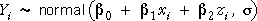
An equivalent way to write the model is:

The random part of the model, εi, is again called the model's error term.
General linear model
Both the simple linear model (with one explanatory variable) and this linear model are special cases of the general linear model which can have any number of explanatory variables,

We will mostly concentrate on models with two explanatory variables in this chapter since they are easier to illustrate with 3-dimensional diagrams, but it should be noted that all the concepts and methods can be generalised to this wider class of models.
Illustration of the model
The diagram below shows a normal linear model that could possibly underlie the Body Fat data,

The diagram initially shows a scatterplot of the two explanatory variables. The model treats the values of Abdomen and Height as fixed (non-random) for the 25 individuals.
Click the y-x-z button to rotate the diagram. The grey plane is

For each individual a vertical red line has been drawn 2σ on each side of the regression plane. The grey planes outlined on each side of the regression plane are also 2σ above and below it.
Click on any such vertical line — the normal distribution of the response that is randomly generated by the model is displayed in blue.
Click Take sample a few times to randomly generate sets of response measurements from this model.
Since about 95% of normal values are within 2σ of their mean, about 95% of the generated crosses will be within the two outlined planes in the diagram.
Rotate the diagram to look end-on at the planes to verify that only about 5% of the crosses are outside the two outline planes.
Sample-to-sample variability
The simple normal linear model,

implies that the recorded data are random — if the data were collected again, the response values would be different.
This randomness is also evident in the least squares plane that is fitted to the data — its position varies from sample to sample.
Simulation
The diagram below takes random samples from a normal linear model that could possibly describe how percentage body fat relates to abdomen circumference and height.

A random sample from the model is shown and the least squares plane is outlined in red.
Click Take sample several times and observe that the least squares plane varies — it is also a random entity. Click Accumulate then take a few more samples.
Distribution of the least squares plane
We have shown that the normal linear model implies randomness in the least squares plane,
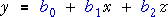
It is however difficult to describe the distribution of something as complex as a plane.
Distribution of the individual parameter estimates
We therefore only describe the distributions of the individual parameter estimates since they have ordinary univariate distributions. Each of the three parameter estimates has a normal distribution that is centred on the corresponding population parameter.
The standard deviations of the parameter estimates depend on the x- and z-values in the data set and also on the error standard deviation, σ. We do not present their formulae fully here but only indicate that they involve a function of the {xi} and the {zi} times σ,

Note that:
The three least squares estimates are unbiased estimators of the underlying model parameters — their distributions' means equal the true population parameters.
Simulation
The diagram below again takes random samples from the normal linear model,

Click Accumulate then take several samples. Observe that all three least squares estimates vary from sample to sample and have distributions that are centred on the true underlying population parameters (30, 0.53 and -0.808).
Click Show theory to see the theoretical normal distributions of the parameter estimates. (Although we have not given complete formulae for their standard deviations, CAST can work them out.)
Need to estimate the error standard deviation
We stated on the previous page that the three least squares estimates have normal distributions whose standard deviations depend on the x-values and z-values in the data set and also on the population error standard deviation, σ
The standard deviations of the parameter estimates are particularly important since they describe the accuracy of the estimates.
The green functions depend only on the x- and z-values in the data, so they can be evaluated from a single data set, but the value of σ is unknown in practice. We therefore need an estimate of σ in order to get information about the accuracy of the estimates.
Estimate of the error variance
For notational convenience, we will describe estimation of the error variance, rather than its square root, the error standard deviation.
The sum of squared residuals from the least squares equation form the basis of our estimate of σ2.

The residual sum of squares has a distribution called a chi-squared distribution with (n - 3) degrees of freedom.

Since the mean of a chi-squared distribution equals its degrees of freedom, our best estimate of σ2 is the mean residual sum of squares,

Simulation
The diagram below again generates random responses from the model

Click Take sample several times to build up the sampling distribution of the residual sum of squares and the best estimate of σ2, the mean residual sum of squares.
Increase the sample size, n, with the pop-up menu.
Reason for dividing by (n - 3)
You may be wondering why different divisors have been used when estimating σ2 for the models that we have encountered so far. In particular,
| Model | Estimate of variance |
|---|---|
| 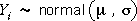 | |
| 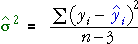 |
As extra parameters are added to the model, it is expected that the least squares residuals will become smaller. After all, the parameter estimates are chosen specifically to make the residual sum of squares as small as possible, so adding parameters to the model should allow us to reduce the residual sum of squares.
The greater the number of parameters in a model, the smaller the denominator for the best estimate of the error variance.
(You may spot the pattern here and may be able to make a good guess at the denominator to use for models with other numbers of explanatory variables!)
Simulation
To illustrate the need for a lower divisor when more explanatory variables are used, we again investigate models for percentage body fat. However we will now use two explanatory variables that are unrelated to body fat.
We therefore simulate the body fat of the 25 men using the simple model,

A scatterplot of percentage body fat against birthday for a sample of men is shown below.
Each additional explanatory variable in the model allows the residual sum of squares to be reduced, even though the explanatory variables are totally unrelated to the response.
Click Another data set and verify that this happens whatever the data set.
If the error variance was known
The three parameter estimates have normal distributions,
If the value of the error standard deviation, σ, was known, a 95% confidence interval for each parameter would be 1.96 standard deviations on each side of the estimate. For example, a 95% CI for β1 could be evaluated as:

Using an estimate of the error variance
In practice, σ2 is rarely a known value, so it must be replaced by an estimate,
To take account of the additional uncertainty caused by this estimate, the constant 1.96 must also be replaced by a larger value that is obtained from t-tables with (n - 3) degrees of freedom. For example,

Properties
As with all earlier confidence intervals, there is a 95% chance that the 95% confidence interval will include the true parameter value.
There is a 5% chance that the confidence interval will not include the true parameter value.
Simulation
The diagram below generates random responses from the model

The diagram initially shows the 95% CI for the slope parameter associated with Abdomen.
Click Accumulate then take several samples to see the variability of these confidence intervals and observe that about 95% of them do include the true parameter (0.53).
Use the pop-up menu to repeat this exercise for the other two parameters of the model.
Calculating the confidence intervals
We have not given full formulae for the confidence intervals, only an indication of how they are calculated — we have not given enough detail for you to find the confidence intervals by hand.
In practice, statistical software should always be used to fit linear models and to evaluate confidence intervals.
Importance of zero slopes
It is of particular importance to ask whether both explanatory variables are needed in the model. If a variable is unimportant, its slope parameter will be zero, so we are interested in testing the two pairs of hypotheses
 and
and 
Test statistics
The test statistics for these two tests are based on the two parameter estimates and the same estimates of their standard deviations that were used to obtain confidence intervals (the standard errors of the estimates). For example, the test statistic for β1 is

P-values
If the null hypotheses are true, the two test statistics have t distributions with (n - 3) degrees of freedom. The p-values for the tests are therefore the tail-areas of this t-distribution, as illustrated in the diagram below.
Simulation to illustrate calculations
In order to show how the p-values are calculated, we will generate data from a model that explains percentage body fat in terms of abdomen circumference. We also record telephone numbers (last two digits) for the individuals as a second explanatory variable that is unrelated to body fat.

A single sample from this model is shown in the diagram below with the least squares plane.
The diagram shows the test statistics for testing whether the coefficients of the two potential explanatory variables are zero.
Take a few samples and observe that for most data sets we would conclude that there is strong evidence that the variable Abdomen is needed in the model, but that there is little evidence of the need for the variable Phone no.
Examples
The diagram below shows the calculations for four real data sets. Read the conclusions carefully.
Pay particular attention to the conclusion for the Catheter length data set above. Even though both p-values are large, you should not conclude that neither variable is needed to predict catheter length. It is reasonable to drop either one of the variables (since their p-values are both greater than 0.2) but not necessarily both variables together.
The next section of CAST explains this problem with the interpretation of the two t-tests in more detail — it is related to the high correlation of the two explanatory variables.